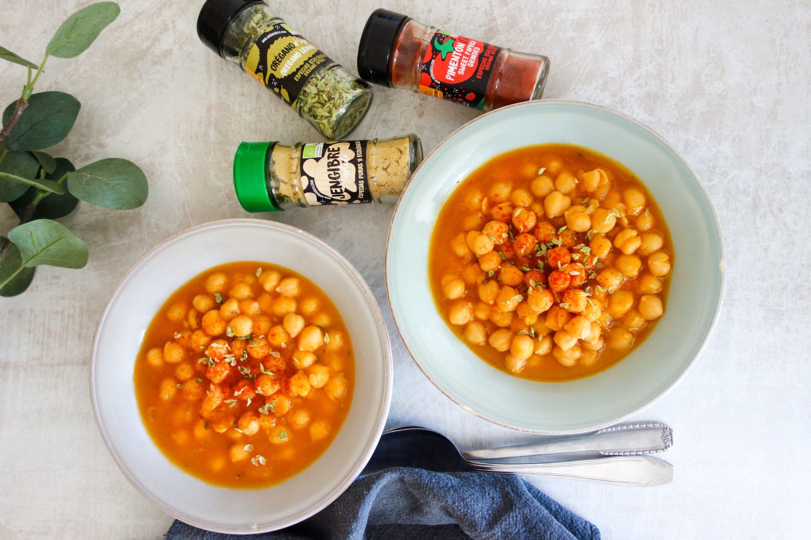

Guiso de garbanzos especiados con calabaza
15 diciembre, 2021 - Publicado por Juan Carlos Illescas
Las legumbres son un ingrediente indispensable en nuestro día a día, podemos tomarlas de mil formas: guiso, burguer, hummus,…, pero a estas alturas del año, lo que más nos sigue apeteciendo son los guisos.
Es importante que la materia prima sea buena, tanto las legumbres como las verduras que utilizamos han de ser de primera calidad, no nos podemos olvidar de las especias, una buena combinación de especias cambia por completo el plato. Hoy vamos a usar calabaza, y si hay algo a lo que le queda bien la calabaza es el jengibre, además vamos a usar orégano también, que ayuda a la digestión y le da un toque muy bueno. Y para no variar, mi querido pimentón dulce, sabéis que sin el, los guisos no son lo mismo!
¡Vamos con la receta!
Ingredientes para 6 raciones:
- 500 g de garbanzos puestos a remojo al menos 8 horas
- 400 g de calabaza limpia y sin semillas
- 1 cebolla
- 1 cucharadita de jengibre en polvo Andunatura
- 1 cucharadita de orégano Andunatura
- 1 cucharadita de pimentón dulce Andunatura
- Aceite de oliva y sal
Preparación:
1. Rehoga la cebolla un par de minutos con un chorrito de aceite de oliva, mientras tanto corta la calabaza en cuadraditos y añádela a la olla junto a las especias: jengibre, orégano, pimentón y una cucharadita de sal, rehoga unos 8-10 minutos a fuego medio.
2. Escurre y enjuaga los garbanzos y añádelos a la olla junto a litro y medio de agua y una cucharadita de sal, deja que se cocine entre 1 hora y 1 hora y media, al finalizar la cocción, rectifica el punto de sal y especias, puedes añadir más si lo necesitas.
Notas: puedes añadir otras verduras o especias si te apetece, es importante que éstas últimas las añadas con las verduras, necesitamos que se calienten al rehogar para potenciar su sabor natural lo más posible.
Aquí te dejo un video que otra persona ha hecho, también lo recomiendo mirar!